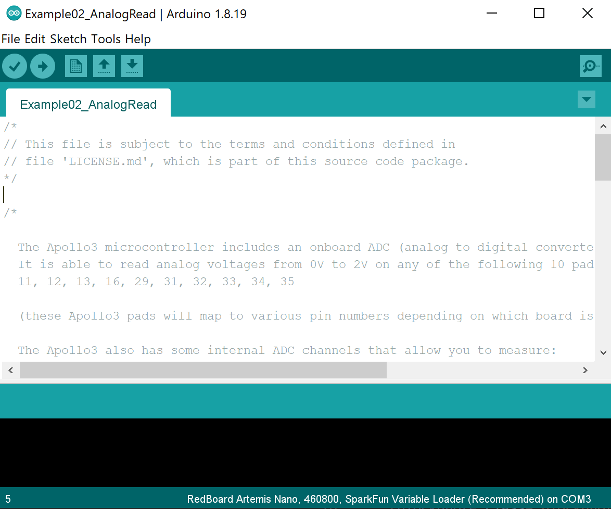
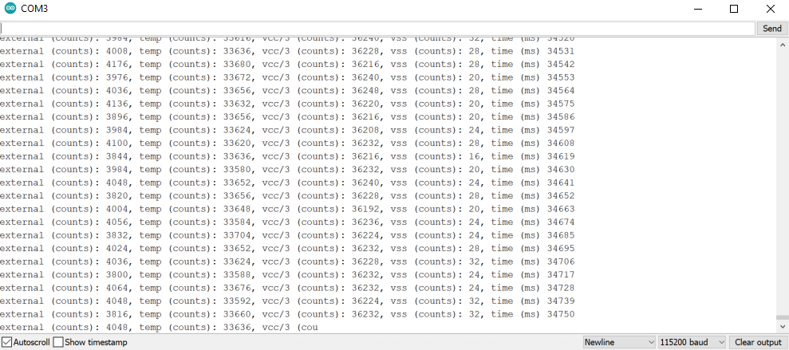
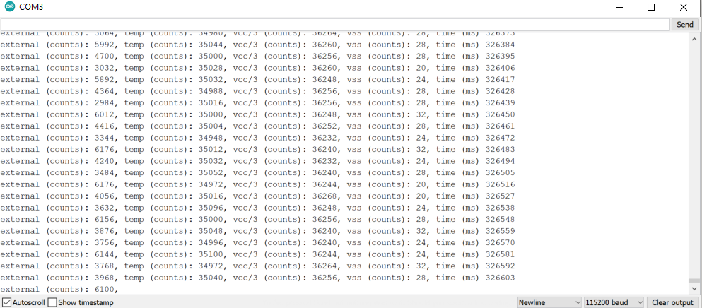

In a robotics class, or any class with microcontroller programming contents, there is often a board. The development board we use for this course is called "Artemis." To be more specific, the board is the SparkFun RedBoard Artemis Nano. Please check out the link to learn more!
In this very first lab, the high level objective is to set up the development environment on our PC, and run a couple example scripts on the board. At the end, we programed the board to turn on the LED when I whistle, and off otherwise.
The Arduino IDE
For this lab, we use the Arduino IDE to write code and program the board. The board has a USB-C connector, which allows it to communicate with our PC via USB protocol. The Arduino IDE, with the appropriate set up, is compatible with Artemis board for an easy-to-use development environment. In the future, however, a workflow with a more capable text editor (e.g. VS Code + PlatformIO) could be more preferable when the program gets more complicated. But that is another story...
The SparkFun website has a thorough documentation of how to install and set up the Arduino IDE with the Artemis board.
 What the Arduino IDE looks like on my computer. Notice the line of text in the bottom denoting the IDE is set up for our RedBoard Artemis Nano!Blink
For anyone who has played with Arduino before, you know the Blink example is like the "Hello World" for embedded development boards. The program itself is very simple, the on-board LED is driven on and off periodically. However, to have the program working, one would need to go through the compile, upload, reset process with the Arduino IDE and the microcontroller. This is a sanity check that makes sure the development setup is working properly such that we could progress to the next steps.
My Blink program works on my board with no issues. The lab handout documents that a slow down of baud rate could be needed, but the default 460800 works well with my board and PC.
A video of the Blink program running on my Artemis board.Serial Communication
Serial communication/UART is very useful for development programs for the Artemis board. The Arduino IDE has a serial monitor. With the Artemis board being compatible with Arduino IDE's library, it is easy to "print" values to the serial monitor as if software programmer are doing printf's to stdout. This is helpful for debugging as we could monitor the numerical values of certain variables by printing them out to the serial monitor in real time. The code snippet below shows how easy it is to print values to the serial monitor.
Serial.begin(BAUD); // setting the baud rate
// similar to doing printf
Serial.println("Hey Hey I'm printing!");
What happens is that the values are sent from the board to the PC via the USB protocol. The details can be found on the wikipedia page and is not of interest here... The example serial program first prints out some lines to the serial monitor after resetting, and then it listens to the serial monitor, and echos whatever is sent from the PC to the board, back to the PC.
The video below shows that the serial port is working. One can see that the PC receives lines of text after resetting, and then the board listens and echos whatever is sent from the PC.
The serial example working on the Artemis board.Analog Read
The next example to run is called analog read. The Artemis board has an onboard ADC (analog to digital converter), which can read analog voltages. It also has some internal ADC channels that can measure 1) internal die temperature, 2) VCC and VSS voltages. In this example, the program reads the ADC value from the die temperature sensor, and prints the information to the serial monitor. (Ha it's connected to the last example!)
In my test, the internal die temperature ADC reader at room temperature is around 33600s (first screenshot below), and if I'm placing it on a hand warmer, the reading becomes around 35000, which is noticeably different. It shows that the temperature sensor is working!
 Microphone Output
The Artemis boards have a pulse density microphone (PDM) on it. PDM stands for pulse-density modulation. This example is a demonstration of how to use the PDM libaray and the FFT (fast fourier-transform) library. The program constantly listens to data from the microphone, and it performs FFT on the signal to extract the frequency spectrum. After that, it prints the loudest frequency to the serial monitor.
The video below shows the board with this program in action. When nothing is played, the loudest frequency is around 125 Hz. When the single frequency tone generator is playing sound and dominates over background noise, the output on the serial monitor matches the frequency of sound played.
Demo of the microphone example. One can see that the serial output matches the frequency played.Whistle LED
The goal here is to program the board to turn on the LED when I whistle, and off otherwise. Unfortunately, I spent 30 minutes on youtube videos trying to learn whistling but couldn't, so I will play a high frequency instead of whistling.
The logic of the program is easy: the MCU should be constantly listening to microphone outputs, performing FFTs on the signal, and picking up the loudest frequency just like from the last example. Then there is this extra logic that sets the LED to on when the loudest frequency is beyond 1000 Hz. Programming is straight-forward as this is solely a combination of the LED and the microphone example. Pseudocode is provided below.
>
// inside the loop block
if microphone_available:
get_microphone_data();
if loudest_frequency > 1000:
set LED_ON;
else:
set LED_OFF;
The video below shows this program running on the Artemis board. A tone of frequency 1245 Hz is played intermittently in the background. When the tone is played, the on-board LED lights on. When the tone stops playing or is not playing, the on-board LED turns off. The program is working correctly in the first run and no debugging effort was involved.